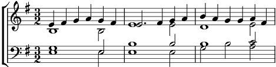

Tourdion
Mi mineur
Arrangement: P. Attaingnant

[Soprano]
Quand je bois du vin clairet,
Ami tout tourne, tourne, tourne, tourne,
Aussi désormais je bois Anjou ou Arbois, (2x)
Quand je bois du vin clairet,
Ami tout tourne, tourne, tourne, tourne,
Aussi désormais je bois Anjou ou Arbois,
Chantons et buvons, à ce flacon faisons la guerre,
Chantons et buvons, les amis, buvons.donc !